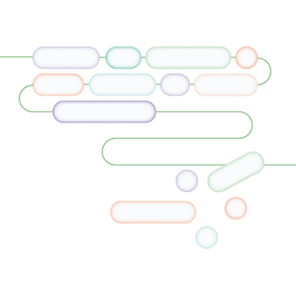

Mit der Academy erhaltet ihr im Business-Plan praxisnahe Lernmodule rund um Facilitation und wirksame Transformation.
Gemeinsam mit 9 Spaces zeigt Plan International Deutschland, wie wertebasiertes Arbeiten Orientierung gibt – nach innen wie nach außen.

Dieses Tool hilft euch dabei, in Meetings frei und kreativ zu denken. Wir empfehlen es vor allem für Formate, in denen es darum geht, Ideen zu generieren.
Ein Tool, das Teams dabei hilft, Variablen für richtig gute Meetings zu definieren und Meeting-Regeln abzuleiten.
Dieses Tool hilft dir dabei, produktiv zu sein – ohne Stress.
Das Tetralemma ist eine Aufstellungsübung, die dir dabei hilft, in unübersichtlichen Situationen gute Entscheidungen zu treffen.